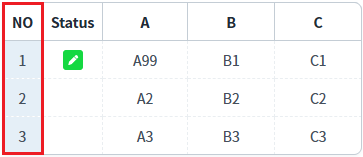
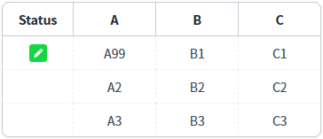
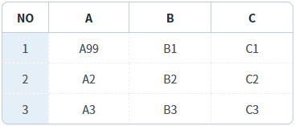
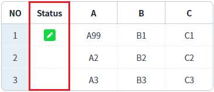
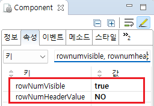
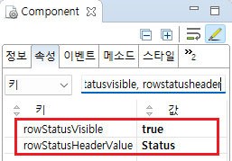

GridView의 메소드를 사용하여 행 번호(rowNum)와 행 상태(rowStatus)를 숨기거나 표시하는 예제입니다. 이 기능은 아래의 메소드를 사용하여 구현되었습니다.
setRowNumVisible: 행 번호 표시 여부를 설정
setRowStatusVisible: 행 상태 표시 여부를 설정
스크립트로 행 번호(rowNum)의 숨김 여부 설정하기
스크립트로 행 상태(rowStatus)의 숨김 여부 설정하기
예제 영역 '스크립트로 컬럼 RowNum, RowStatus의 숨김 여부 설정하기'에 구성된 GridView에서 테스트합니다.1
STEP 1: 초기 상태 확인하기
GridView의 visibleRowNum 속성이 'true'로 설정되어 rowNum(행 번호)이 표시됩니다.
이 컬럼의 헤더 컬럼의 값은 'NO'로 설정되어 있습니다.
Image 1.브라우저(Chrome) 실행 예시

2
STEP 2: 행 번호(rowNum)열 숨기기
"행 번호 숨기기" 버튼을 클릭합니다.
3
STEP 3: 실행 결과를 확인합니다.
행 번호(rowNum)가 표시된 'NO' 컬럼이 숨겨집니다.
Image 2.브라우저(Chrome) 실행 예시

4
STEP 4: 행 번호(rowNum)열 보이기
"행 번호 보이기" 버튼을 클릭합니다.
5
STEP 5: 실행 결과를 확인합니다.
행 번호(rowNum)가 표시된 'NO' 컬럼이 표시됩니다.
Image 3.브라우저(Chrome) 실행 예시
예제 영역 '스크립트로 컬럼 RowNum, RowStatus의 숨김 여부 설정하기'에 구성된 GridView에서 테스트합니다.1
STEP 1: 초기 상태 확인하기
GridView의 rowStatusVisible 속성이 'true'로 설정되어 rowStatus(행 상태)가 표시됩니다.
이 컬럼의 헤더 컬럼의 값은 '상태'로 설정되어 있습니다.
Image 4.브라우저(Chrome) 실행 예시
2
STEP 2: 행 상태(rowStatus)열 숨기기
"행 상태 숨기기" 버튼을 클릭합니다.
3
STEP 3: 실행 결과를 확인합니다.
행 상태(rowStatus)가 표시된 'Status' 컬럼이 숨겨집니다.
Image 5.브라우저(Chrome) 실행 예시

4
STEP 4: 행 상태(rowStatus)열 보이기
"행 상태 보이기" 버튼을 클릭합니다.
5
STEP 5: 실행 결과를 확인합니다.
행 상태(rowStatus)가 표시된 'Status' 컬럼이 표시됩니다.
Image 6.브라우저(Chrome) 실행 예시

1
STEP 1: GridView의 속성을 정의합니다.
[필수] rowNumVisible="true"
행 번호 표시 기능 사용
[선택] rowNumHeaderValue="설정 값"
행 번호 표시 컬럼의 헤더 컬럼의 문자열
예시) rowNumHeaderValue="NO" //행 번호 컬럼의 헤더 값을 'NO'로 표시
GridView의 rowNumVisible 속성의 값이 'true'로 설정되어야 GridView의 setRowNumVisible 메소드를 사용하여 열을 보이기/숨기기 기능을 구현할 수 있습니다.
Image 7.웹스퀘어 스튜디오의 Component View - 속성 설정 예시

Example 1.Source
<!-- gridView 의 소스 본문 예시 --> <w2:gridView rowNumVisible="true" rowNumHeaderValue="NO"> <!-- 중략 --> </w2:gridView>
2
STEP 2: 스크립트를 작성합니다.
GridView의 'setRowNumVisible' 메소드를 사용합니다.
Example 2.Script
//예제 파일의 스크립트 "scwin.btn_ex1_1_onclick", "scwin.btn_ex1_2_onclick"을 참고바랍니다. // GridView의 rowNum 컬럼을 숨깁니다. grd_exam1.setRowNumVisible(false); // GridView의 rowNum 컬럼을 표시합니다. grd_exam1.setRowNumVisible(true);
1
STEP 1: GridView의 속성을 정의합니다.
[필수] rowStatusVisible="true"
행 상태 표시 기능 사용
[선택] rowStatusHeaderValue="설정 값"
행 번호 표시 컬럼의 헤더 컬럼의 문자열
예시) rowStatusHeaderValue="Status" //행 번호 컬럼의 헤더 값을 'Status'로 표시
GridView의 rowStatusVisible 속성의 값이 'true'로 설정되어야 GridView의 setRowStatusVisible 메소드를 사용하여 열을 보이기/숨기기 기능을 구현할 수 있습니다.
Image 8.웹스퀘어 스튜디오의 Component View - 속성 설정 예시

Example 3.Source
<!-- gridView 의 소스 본문 예시 --> <w2:gridView rowStatusVisible="true" rowStatusHeaderValue="Status"> <!-- 중략 --> </w2:gridView>
2
STEP 2: 스크립트를 작성합니다.
GridView의 'setRowStatusVisible' 메소드를 사용합니다.
Example 4.Script
//예제 파일의 스크립트 "scwin.btn_ex2_1_onclick", "scwin.btn_ex2_2_onclick"을 참고바랍니다. // GridView의 rowStatus 컬럼을 숨깁니다. grd_exam1.setRowStatusVisible(false); // GridView의 rowSatus 컬럼을 표시합니다. grd_exam1.setRowStatusVisible(true);
rowStatusVisible
rowStatusHeaderValue
rowNumVisible
rowNumHeaderValue
setRowStatusVisible(visible)
setRowNumVisible(visible)